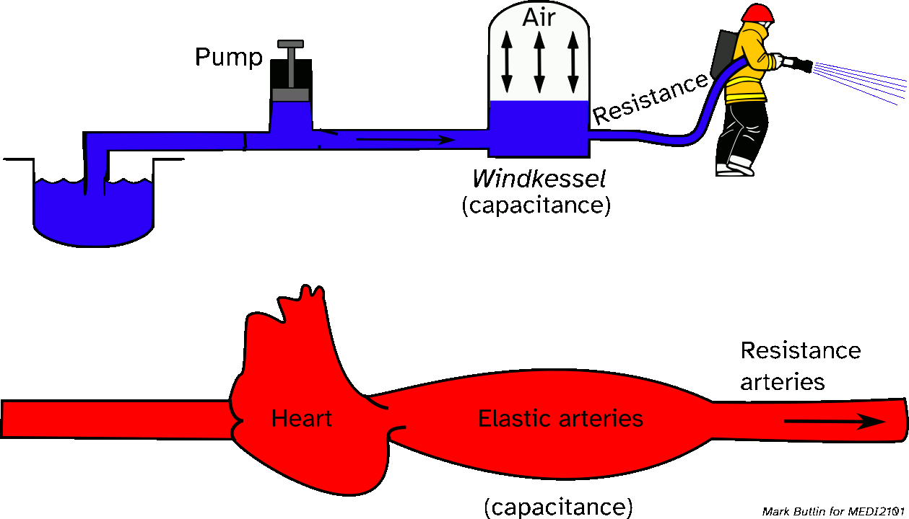
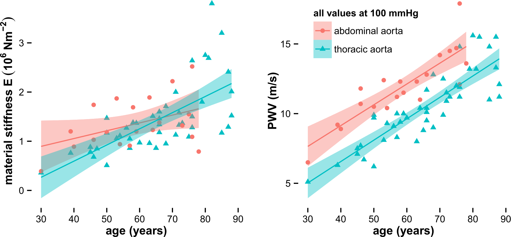
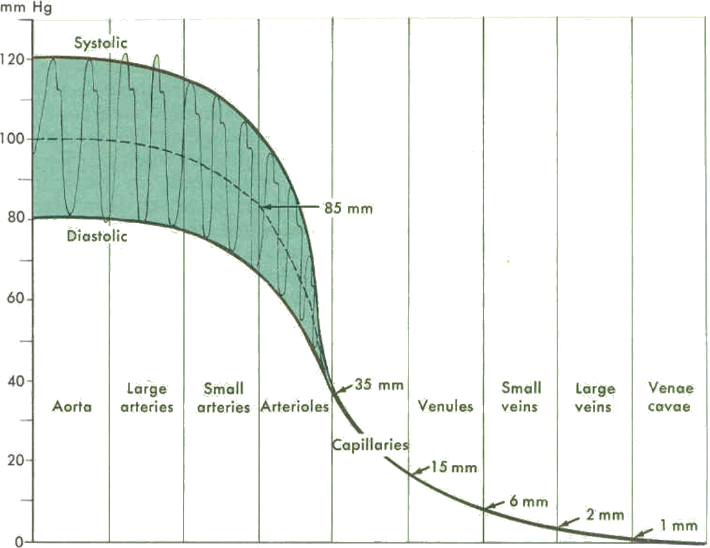

<!-- .slide: id="intro" --> ### MEDI7011 <br>Research Frontiers in Medical Science # Blood pressure and vascular function: The role of regional changes of large artery stiffness in end-organ diseases. ##### Guest lecturer: Dr Mark Butlin (BE, PhD, SFHEA) (he/him) Macquarie Medical School, Faculty of Medicine, Health and Human Sciences<br>Macquarie University. On the land of the Wallumattagal clan of the Dharug Nation. <img src="images/lgbtqi_safe_space.jpg" alt="LGBTQI+ Inclusive Equitable Diverse Accepting Welcoming Safe Space for Everyone" align="right" width=17%> <a href="https://students.mq.edu.au/support"><img src="images/mqwellbeing.png" alt="Contact Macquarie University Wellbeing" align="right" width=9%></a> --- <!-- .slide: data-auto-animate-restart --> ## Define arterial stiffness and the *Windkessel* effect -- ### Define arterial stiffness and the *Windkessel* effect #### Compliant arteries act as a capacitor, storing and releasing energy  -- ### Define arterial stiffness and the *Windkessel* effect #### The heart: a pulsatile flow source **Heart rate (HR)** The number of beats of the heart per unit time (e.g. beats per minute bpm) **Stroke volume (SV)** The volume of blood ejected by the left ventricle into the aorta in a single stroke (beat) of the heart **Cardiac output (CO)** The average rate of blood being ejected by the left ventricle into the aorta \$ CO=SV\times HR \$ -- <!-- .slide: data-auto-animate data-background-image="images/left_ventricular_outflow.jpg" data-background-size="contain" --> -- ### Define arterial stiffness and the *Windkessel* effect #### The capillaries: a non-pulsatile flow bed <img class="r-stretch" src="images/capillary_flow.jpg"> <p></p> <p class="citation">Chaigneau E, Oheim M, Audinat E, Charpak S. *Two-photon imaging of capillary blood flow in olfactory bulb glomeruli*. Proc Natl Acad Sci USA. 2003, 100:13081--6.</p> -- ### Define arterial stiffness and the *Windkessel* effect #### Large arteries get stiffer with age  <p class="citation">Butlin, M. & Avolio, A. P. <a href="https://doi.org/10.1007/978-3-319-03970-1_3" target="_blank">Age-related changes in the mechanical properties of arteries in Mechanical properties of aging soft tissue</a>, Springer, 2015, 37-74.<br>Original data from Langewouters, G. J. et al. J Biomech, 1984, 17:425-35.</p> -- ### Define arterial stiffness and the *Windkessel* effect #### Stiff arteries reduce the *Windkessel* effect <img class="r-stretch" src="images/Windkessel_effect_stiff.gif"> -- <!-- .slide: data-auto-animate data-background-image="images/TrampolineSimpsons.gif" --> ### <span style="color:white">Compliant large arteries</spab> -- <!-- .slide: data-background-video="images/TrampolineDunkFail.mp4" data-background-video-muted="TRUE" --> ### <span style="color:white">Stiff large arteries</span> <p class="citation"><a href="https://www.youtube.com/watch?v=vp43BfGvT6U">Source: Weekly Media</a></p> -- <!-- .slide: data-auto-animate data-background-image="images/atherosclerosis.gif" data-background-position="right" data-background-size="contain"--> ### *Not* **Athero**sclerosis #### <div class="container"> <div class="col"> <p>The reduction of the <em>Windkessel</em> effect is <b>not</b> due to <b>athero</b>sclerosis: Small artery flow restriction (or blockage) through isolated plaque formation in the <em>intimal layer</em>.</p> </div> <div class="col"> </div> <div class="col"> </div> </div> -- <!-- .slide: data-auto-animate data-background-image="images/arterio.png" data-background-position="right" data-background-size="contain"--> ### **Arterio**sclerosis #### <div class="container"> <div class="col"> <p>The loss of the <em>Windkessel</em> effect is due to <b>arterio</b>sclerosis: Stiffening of the arteries including changes in the <em>medial layer</em>.</p> </div> <div class="col"> </div> <div class="col"> </div> </div> --- <!-- .slide: data-auto-animate-restart --> ## Discuss the clinical importance of large artery stiffness -- ### Discuss the clinical importance of large artery stiffness #### Major contributor to the predominant form of hypertension <img src='images/Nilsson2013.gif' width='55%' width="50%"> <p>IDH: isolated diastolic hypertension<br>ISH: isolated systolic hypertension</p width="50%"> <p class="citation">Nilsson, PM et al. <em>Blood pressure and pulse wave velocity as metrics for evaluating pathologic ageing of the cardiovascular system.</em> Blood Press, 2013, 23:17--30.</p> Note: Isolated diastolic hypertension (IDH) accounts for the majority of hypertension in younger individuals. With age, isolated systolic hypertension (ISH) accounts for the vast majority of hypertension. If is ISH that is associated with, and likely caused by, the stiffening of arteries. -- ### Discuss the clinical importance of large artery stiffness #### Independent predictor of cardiovascular mortality <img src='images/Vlachopoulos2010.png' width='85%' align="left"> <p class="citation">Vlachopoulos, C et al. <wm>Prediction of cardiovascular events and all-cause mortality with arterial stiffness: a systematic review and meta-analysis</em>. J Am Coll Cardiol, 2010, 55:1318--27.</p> Note: The stiffness of large arteries is an independent predictor of cardiovascular events, cardiovascular mortality, and all-cause mortality. --- <!-- .slide: data-auto-animate-restart --> ## How do large artery changes effect the end-organs? -- ### How do large artery changes effect the end-organs? #### Pulse pressure transmission -- ### How do large artery changes effect the end-organs? #### Pulse pressure transmission  <p class="citation">Image from an old physiology text book.</p> Note: Pulse pressure (systolic minus diastolic pressure) is actually \emph{higher} in the large arteries than in the aorta. The waveform itself contains less power, but due to wave reflect and a net increase in resistance, the height of the waveform is increased -- ### How do large artery changes effect the end-organs? #### Pulse pressure transmission <img class="r-stretch" src="images/Windkessel_effect_stiff.gif"> -- ### How do large artery changes effect the end-organs? #### Low resistance arterial beds Low resistance arterial beds may be particularly susceptable to the increased transmission of the pulse pressure. Low resistance arterial beds include: - the brain - the kidneys -- ### How do large artery changes effect the end-organs? #### Measurement <p class="citation">Blood Pressure and Vascular Function Laboratory, Macquarie University.</p> -- ### How do large artery changes effect the end-organs? #### Stiffness of large arteries is associated with cerebral small vessel disease <img class="r-stretch" src="images/Poels_2012.jpg"> <p class="citation">Poels, M. M. F. et al. <em>Arterial stiffness and cerebral small vessel disease: the Rotterdam scan study</em>. Stroke, 2012, 43, 2637-42.</p> Note: Controlled hypertension has a slight trend toward increased cerebral small vessel disease with increasing arterial stiffness. This association is definite and significant in uncontrolled hypertension. The hypothesis is that higher artery stiffness promotes the high aortic pulse pressure to travel further into the vasculature and damage the small arteries of the brain. -- ### How do large artery changes effect the end-organs? #### Stiffness of large arteries is associated with dementia <img class="r-stretch" src="images/Webb_2012.png"> <p class="citation">Webb, AJS et al. <em>Increased cerebral arterial pulsatility in patients with leukoaraiosis: arterial stiffness enhances transmission of aortic pulsatility</em>. Stroke, 2012, 43:2631-2636.</p> Note: Arterial stiffness and pulsatility increase with severity of leukoaraiosis (decreased brain white matter vascular density) in both the large arteries (aorta) and the brain (middle cerebral artery, MCA). -- <div class="r-stack"> </div> -- ### How do large artery changes effect the end-organs? #### Plausible mechanistic link to Alzheimer's disease <p class="citation">Gangoda, S. V.; Butlin, M.; Gupta, V. & Avolio, A. P. <em>High blood pressure and cyclic stretch alter cerebral amyloid deposition and endothelial function</em>. Hypertension - Abstracts From the 36th Annual Scientific Meeting of the HBPRCA, 2015, 65, e35.</p> Note: Amyloid beta (substance associated with plaques in Alzheimer's disease) is increased in the brain tissue of the Spontaneously Hypertensive Rat (SHR) compared to the normotensive Wistar Kyoto (WKY) rat. -- ### How do large artery changes effect the end-organs? #### Plausible mechanistic link to Alzheimer's disease <p class="citation">Gangoda, S. V. S.; Avadhanam, B.; Jufri, N. F.; Sohn, E. H.; Butlin, M.; Gupta, V.; Chung, R. & Avolio, A. P. Pulsatile stretch as a novel modulator of amyloid precursor protein processing and associated inflammatory markers in human cerebral endothelial cells. Scientific Reports, Springer Nature, 2018, 8, 1689.</p> Note: Amyloid beta (a) 40 and (b) 42 secretion and (c) the ratio of the two for increasing magnitude of pulsatile (1 Hz) stretch of HCMECs over 18 hours. *P less than 0.05. --- <!-- .slide: data-auto-animate-restart --> ## Can the stiffening of large arteries be treated/prevented? -- ### Can the stiffening of large arteries be treated/prevented? #### Mechanism of anti-hypertensive drugs <table> <tr> <th> antihypertensive drug class </th> <th> action </th> </tr><tr> <td> Diuretics </td> <td> <span style="color:red">Reduce blood volume</span> through salt reduction. </td> </tr><tr> <td> Beta blockers </td> <td> <span style="color:red">Reduce heart rate</span>, reduce cardiac output. </td> </tr><tr> <td> ACE inhibitors </td> <td> Reduce angiotensin production and <span style="color:red">reduce peripheral vasoconstriction</span>. </td> </tr><tr> <td> ARB's </td> <td> Block angiotensin, <span style="color:red">reduce peripheral vasoconstriction</span>. </td> </tr><tr> <td> Calcium channel blockers </td> <td> Prevent calcium entering smooth muscle, <span style="color:red">reduces heart contractility and peripheral vasoconstriction</span>. </td> </tr><tr> <td> Alpha blockers </td> <td> Vasodilator, reduces <span style="color:red">peripheral resistance</span>. </td> </tr><tr> <td> Alpha-2 Receptor agonists </td> <td> reduce sympathetic activity<br>reduced heart rate and peripheral resistance</span>. </td> </tr><tr> <td> Peripheral adrenergic inhibitors </td> <td> Block brain neurotransmitters, reduce smooth muscle contraction and <span style="color:red">peripheral resistance</span>. </td> </tr><tr> <td> Vasodilators </td> <td> Directly act on blood vessels to <span style="color:red">reduce peripheral resistance</span>. </td> </tr> </table> <p> </p> <p class="citation">ACE: angiotensin converting enzyme. ARB: angiotensin receptor blocker.</p> -- <!-- .slide: data-auto-animate data-background="#373A36" --> <p class="r-fit-text" style="color:white">No treatment options.</p> <p class="fragment" style="color:white">(Yet.)</p> -- <!-- .slide: data-auto-animate data-background="#373A36" --> <p class="r-fit-text" style="color:white">Can it be prevented?</p> -- ### Can the stiffening of large arteries be treated/prevented? #### Lifestyle factors: Effect of dietary salt <p class="citation">Avolio, A. P. et al. <em>Improved arterial distensibility in normotensive subjects on a low salt diet</em>. Arteriosclerosis, 1986, 6:166-169.</p> Note: People eating a low salt diet have less stiff arteries (as measured by pulse wave velocity, PWV). This effect is more pronounced in older individuals, as arterial stiffness increases in the general population on a Western diet (high salt). -- ### Can the stiffening of large arteries be treated/prevented? #### Lifestyle factors: Effect of dietary salt <img src="images/Connolly_2016_high_salt_study_SBP.png" align="left" width="50%"> <img src="images/Connolly_2016_high_salt_study_PWV.png" align="right" width="50%"> <p class="citation">Connolly, K.; Spronck, B.; Georgevsky, D; Avolio, A. P. McEniery, C. M.; Wilkinson, I. B. & Butlin, M. <em>Large artery stiffness and the role of glycosaminglycans with high dietary salt intake</em>. Unpublished, 2016.</p> Note: Study in animals designed to isolate the effect of a high salt diet. Control animals were fed a normal (low salt) diet. Two other groups were placed on a high (8\%) salt diet, with one group receiving anti-hypertensive treatment to counteract the effect of salt on blood pressure. --- <!-- .slide: data-auto-animate-restart --> ## Can the stiffening of large arteries be measured? -- ### Can the stiffening of large arteries be measured? #### <p class="citation">Blood Pressure and Vascular Function Laboratory, Macquarie University.</p> -- ### Can the stiffening of large arteries be measured? #### Wearable devices <img class="r-stretch" src="images/Peake_2018_fig1.webp"> <p class="citation">Peake J.M. et al. <a href="https://www.frontiersin.org/article/10.3389/fphys.2018.00743">A Critical Review of Consumer Wearables, Mobile Applications, and Equipment for Providing Biofeedback, Monitoring Stress, and Sleep in Physically Active Populations.</a> Frontiers in Physiology. (2018)9.</p> -- ### Can the stiffening of large arteries be measured? #### Wearable devices <img class="r-stretch" src="images/Peake_2018_fig1_modified.webp"> <p class="citation">Modified from: Peake J.M. et al. <a href="https://www.frontiersin.org/article/10.3389/fphys.2018.00743">A Critical Review of Consumer Wearables, Mobile Applications, and Equipment for Providing Biofeedback, Monitoring Stress, and Sleep in Physically Active Populations.</a> Frontiers in Physiology. (2018)9.</p> --- <!-- .slide: data-auto-animate-restart --> ### MEDI7011 <br>Research Frontiers in Medical Science # Blood pressure and vascular function: The role of regional changes of large artery stiffness in end-organ diseases. ##### Guest lecturer: Dr Mark Butlin (BE, PhD, SFHEA) (he/him) Macquarie Medical School, Faculty of Medicine, Health and Human Sciences<br>Macquarie University. On the land of the Wallumattagal clan of the Dharug Nation. <img src="images/lgbtqi_safe_space.jpg" alt="LGBTQI+ Inclusive Equitable Diverse Accepting Welcoming Safe Space for Everyone" align="right" width=17%> <a href="https://students.mq.edu.au/support"><img src="images/mqwellbeing.png" alt="Contact Macquarie University Wellbeing" align="right" width=9%></a>